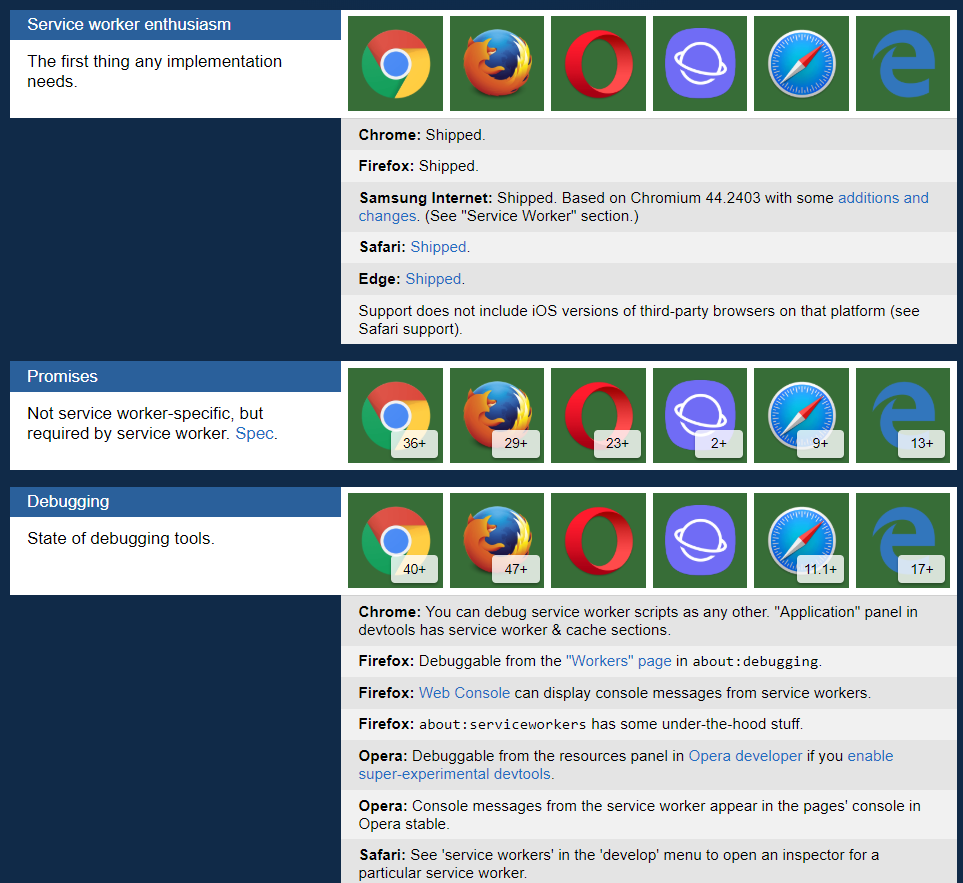

WebWiB goes PWA

Was heisst Progressive Web App (PWA)?
Schrittweises Verbessern von Webseiten
Ziel: Aussehen und Verhalten wie eine native Anwendung
Mittels Zusammenspiel verschiedener Technologien/Konzepte
Eigenschaften einer PWA
Reliable: Schnelles Laden und Offlinefunktionalität
Fast: Laufzeitverhalten (Useractions, intuitiver Zugriff auf Gerätefunktionen)
Engaging: Homescreen-Icon, Benachrichtigungen
Ausgewählte Technologien im Überblick
Single Page Application
Sämtliche HTML-, JS- und CSS-Dateien werden initial geladen
Stichworte: Minification, Bundling, Ahead-of-Time, Tree-Shaking
Der dynamischer Inhalt wird mittels Useraktion per Web-Service nachgeladen
ServiceWorker
Konfigurierbarer Netzwerkproxy
Kann im Hintergrund arbeiten
ServiceWorker
"index": "/index.html",
"assetGroups": [{
"name": "app",
"installMode": "prefetch",
"resources": {
"files": [
"/favicon.ico",
"/index.html"
],
"versionedFiles": [
"/*.bundle.css",
"/*.bundle.js",
"/*.chunk.js"
]}
}, ...
ServiceWorker
...
{
"name": "assets",
"installMode": "lazy",
"updateMode": "prefetch",
"resources": {
"files": [
"/assets/**"
]}
}],
...
...
"dataGroups": [{
"name": "from-api",
"urls": ["https://domain.tld/webwib-api/**"],
"cacheConfig": {
"strategy": "freshness",
"maxSize": 15,
"maxAge": "1h",
"timeout": "5s"
}
}]
Web App Manifest
"short_name": "Maps",
"name": "Google Maps",
"icons": [
{
"src": "/images/icons-192.png",
"type": "image/png",
"sizes": "192x192"
},
{
...
}
],
"start_url": "/maps/?source=pwa",
"background_color": "#3367D6",
"display": "standalone",
"theme_color": "#3367D6"
Browserunterstützung
PWA-Check (Lighthouse)

HTTPS
Responsiveness
Alle App-URLs lassen sich Offline betrachten
WebApp Manifest (Add to Homescreen)
Initiale Ladezeiten unter 10s unter 3G-Bedingungen
Seitenübergänge: Sofort/Platzhalter/Ladeindikator
Jede Seite hat eine eigene URL
Danke für die Aufmerksamkeit.
Fragen?